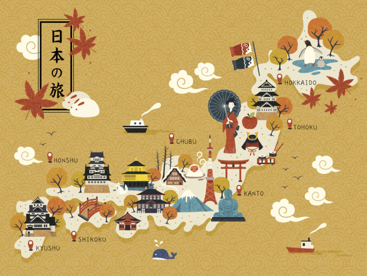«Путешественник видит то, что видит; туристы видят то, на что они приехали посмотреть»
Туризм
Культура и традиции Японии привлекают своей спокойной красотой и уравновешенностью. В каждой детали архитектурных памятников и удивительных строений прослеживается глубокий смысл. Достопримечательности Японии зачаровывают! Миллионы туристов каждый год приезжают в эту удивительную страну, чтобы созерцать чудесные пейзажи и наслаждаться местными достопримечательностями. Как нежный цвет сакуры, перед путешественниками раскрываются любопытные уголки природы, архитектура и культурные ценности Востока. Тонкость, грация и изящность линий и форм – это Япония.
- Гора Фудзияма
- Храм Ицукусима
- Святилище из тысячи алых ворот
- Парк Мира в Хиросиме
- Небесное дерево
- Бамбуковый лес в Сагано
- Фестиваль бамбуковых светильников в городе Такета
Содержание
Самая узнаваемая достопимечательность Японии - гора Фудзияма
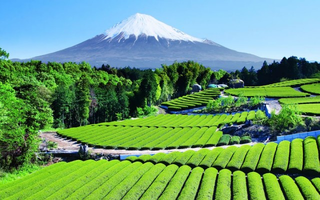Символ страны восходящего солнца – священная гора Фудзи. Что посетить в Японии за пределами столицы? Обязательно стоит увидеть вблизи молодой вулкан Фудзияма. Японцы считают, что гора богами сотворена из хаоса. Это самая узнаваемая достопримечательность страны. Величественный горный пик возносится к небесам на высоту 3776 метров. Многие пилигримы осуществляют подъем на гору Фудзи. На протяжении пути есть станции, где туристы могут отдохнуть. В окрестностях горы немало развлечений. Гору Фудзияма причудливой дугой опоясывают пять озер: В чистых водах, которых в спокойную и ясную погоду отражается, словно в зеркале, величественный одинокий пик Фудзи.
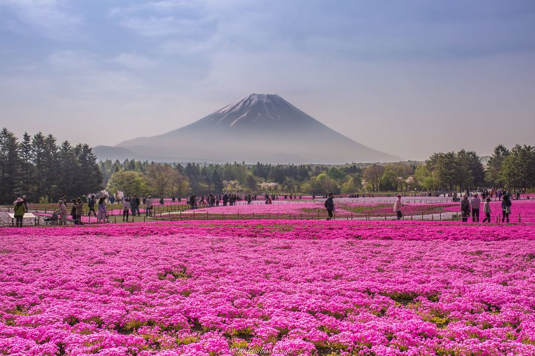Шибазакура – это редкий мох розового и бело-фиолетового цвета, который растет в области пяти озер Фудзи. Каждый год, с апреля по июнь в честь этого необыкновенного явления проходит фестиваль Фудзи Шибазакура.
Между озерами раскинулся мрачный лес Дзюкай, в который легко зайти, но трудно выйти, поскольку можно заблудиться. Поблизости есть приятное место для пикника – водопад Сирайто высотой в 26 метров. Окрестности горы Фудзи – прекрасное место, чтобы поближе узнать природные достопримечательности Японии. У горы есть официальный сайт: Mt. Fuji ClimbingХрам Ицукусима
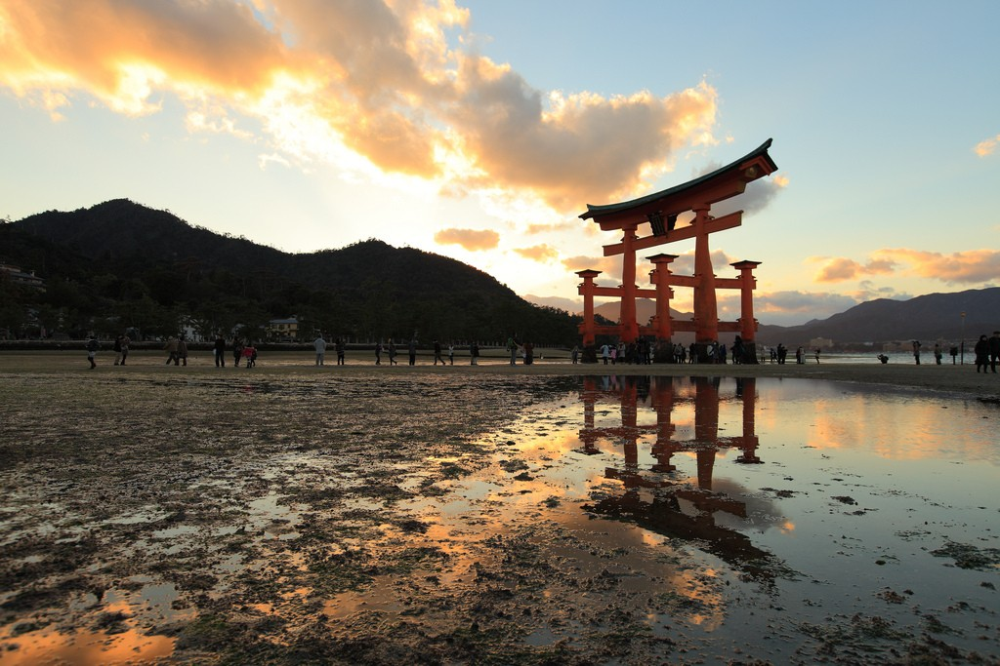Один из ярких образцов храмовой архитектуры Японии – Ицукусима-дзиндзя, расположенный над морем. Ворота святилища, которое включено в достопримечательности Японии, расположены у горы Мисэн. Их высота составляет 16 метров. Яркие ворота выразительно подчеркивают окружающий пейзаж, и их просто невозможно ни с чем перепутать.
Комплекс Ицукусима-дзиндзя состоит из нескольких святилищ, каждое из которых посвящено своему божеству. Главный храм комплекса выстроен в честь богини Микото, покровительствующей мореходству. Большая часть храмовых построек расположена прямо на воде на деревянных сваях. Впечатляет Зал «Тысячи циновок».
Считается, что он построен лишь из одного ствола камфорного дерева. На берегу защищенной от ветра бухты расположена сокровищница. Она содержит старинные предметы, шедевры искусства и древние свитки, пожертвованные храму Ицукусима-дзиндзя. Каждый турист может испытать справедливость утверждения, что проход под храмовыми воротами принесет удачу и богатство.
Святилище из тысячи алых ворот
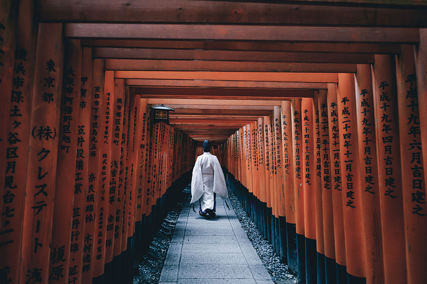дним из исторических символов Японии считается Храм Фусими-Инари или Святилище из тысячи алых ворот, посвященное богине рисового плодородия. Грандиозные тоннели с порталами, предназначенными для богов, создавались, согласно верованию синтоизма. Японцы считают, что посещение Храма Фусими-Инари приносит успех и процветание. Не сомневайтесь, что посмотреть в Японии. Особенности священного комплекса в префектуре Киото оставят неизгладимое впечатление.
дним из исторических символов Японии считается Храм Фусими-Инари или Святилище из тысячи алых ворот, посвященное богине рисового плодородия. Грандиозные тоннели с порталами, предназначенными для богов, создавались, согласно верованию синтоизма. Японцы считают, что посещение Храма Фусими-Инари приносит успех и процветание. Не сомневайтесь, что посмотреть в Японии. Особенности священного комплекса в префектуре Киото оставят неизгладимое впечатление.
Центральные ворота святилища украшают две лисицы. Они являются наиболее почитаемыми животными японского фольклора и мифологии. При посещении Храма нужно следовать четкому ритуалу, первое условие которого – обязательное пожертвование. Его оставляют в офертории – ящике для монет. Священный комплекс состоит из пяти главных молелен, соединенных между собой тоннелями из ворот-торий. Они являются пожертвованиями людей Храму. Посещать Фусими-Инари лучше ночью, чтобы насладиться таинственной и мистической атмосферой тысячи алых ворот.
Паломничество по длинному тоннелю длится пару часов, затем путники попадают в основное святилище. По дороге можно увидеть множество статуй лис, небольшие часовни и могилы. На половине пути есть обзорная площадка с прекрасным видом на город Киото
Парк Мира в Хиросиме
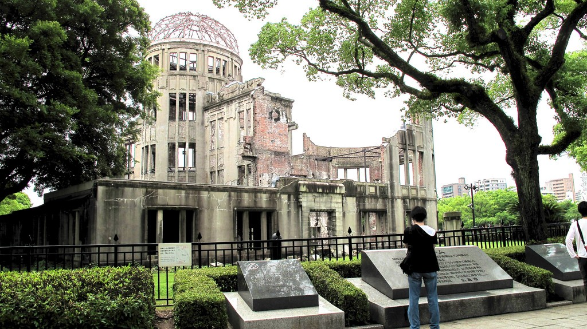Страна восходящего солнца в послевоенное время – это новые достопримечательности Японии. Наиболее известная среди них – Парк Мира в Хиросиме, посвященный памяти жертв атомной бомбы. На огромной территории расположен мемориальный ансамбль, в который входят Музей Мира, памятники, ритуальный колокол и кенотаф. На мемориальной площадке проводят манифестации в память о трагедии Хиросимы. Кенотаф – это символическая могила жертв ядерного удара, имена которых запечатлены на мемориальной доске.
В середине XX века ансамбль Парка Мира дополнил постамент японской девочки Садако Сасаки с бумажным журавликом в руке. Это своеобразный крик отчаяния японцев, пострадавших от удара атомной бомбы. Девочка умерла от лучевой болезни через десять лет после страшной трагедии. Она мечтала сделать тысячу журавликов и загадать желание, но не успела…
Фонтан молитвы на территории Парка Мира появился несколько позже. Он символизирует желание людей, жаждущих жить после атомного взрыва, и воплощает страдания тысяч людей, которым не дали воды. А на монументе Пламя Мира горит вечный огонь, зажженный в далеком 1964 году. Печальный памятник архитектуры – это дань памяти всем японцам, пострадавшим от взрыва атомной бомбы.
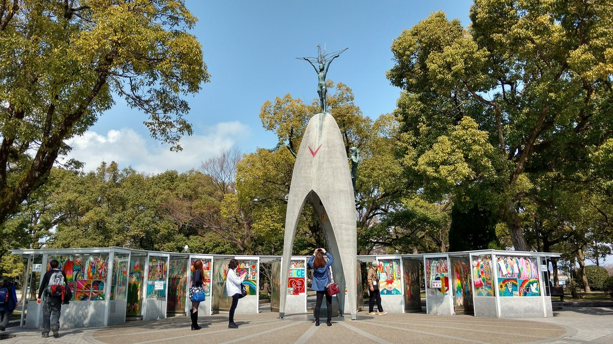Сами японцы называют его «Куполом атомного взрыва» или «Гэмбаку Дому» из-за большого купола, венчающего строение. Мемориал мира в Хиросиме немым укором напоминает нам о страшных страницах в истории человечества, хрупкости окружающей среды, бессмысленных смертях и страданиях.
В 1996 году Гэмбаку Дому был включен ЮНЕСКО в список Всемирного наследия. Такое высокое международное признание Мемориал мира получил как самый важный монумент, посвященный катастрофическим последствиям ядерной бомбардировки мирных жителей. Это место является наиболее посещаемой достопримечательностью Хиросимы. Знакомство с Гэмбаку Дому даже входит в школьную программу Японии, чтобы подрастающее поколение никогда не повторило чудовищных ошибок.
Небесное дерево
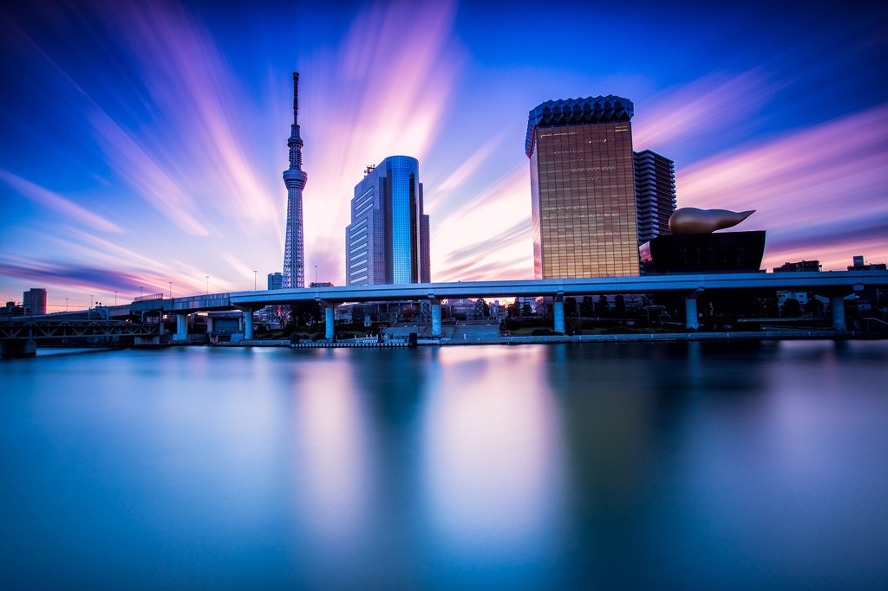Небесное дерево Токио – вторая по высоте телебашня в мире. Это изящное архитектурное строение из стекла, бетона и металла взметнулось ввысь, благодаря стараниям опытных конструкторов и инженеров. Высота сооружения составляет 634 метра. Над этим проектом трудилось полмиллиона человек. Грандиозная телебашня Tokyo sky tree достойна восхищения: Гиды в Токио обязательно организуют посещение Небесного дерева Токио, поражающего воображение своей высотой. Туристы смогут созерцать столицу Японии, которая как на ладони раскинулась у подножия огромной телебашни.
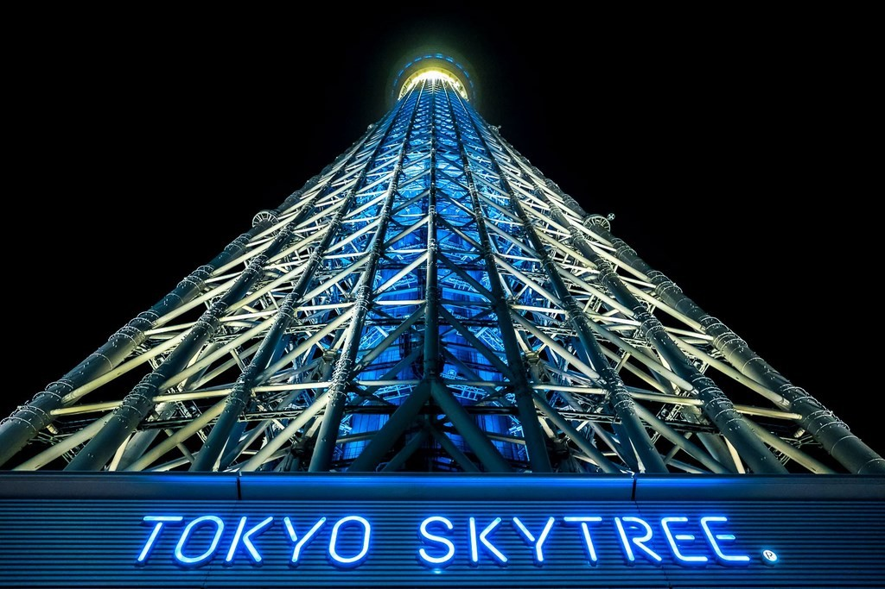Открытых площадок и балконов здесь нет, поэтому панорамные снимки можно выполнять только через стекло. Примечательно, что крыша телебашни расположена на высоте 470 метров, а остальной метраж составляет антенна.
Первая смотровая площадка располагается на 350-метрой высоте и вмещает до 2000 человек, а вторая спирально закручивается вокруг шпиля, принимая до 900 посетителей. Умопомрачительное зрелище открывается с грандиозной высоты Небесного дерева Токио. Экскурсии в Токио обязательно включают визит на телебашню столицы, которая входит в тройку самых высоких строений в мире.
Бамбуковый лес Сагано
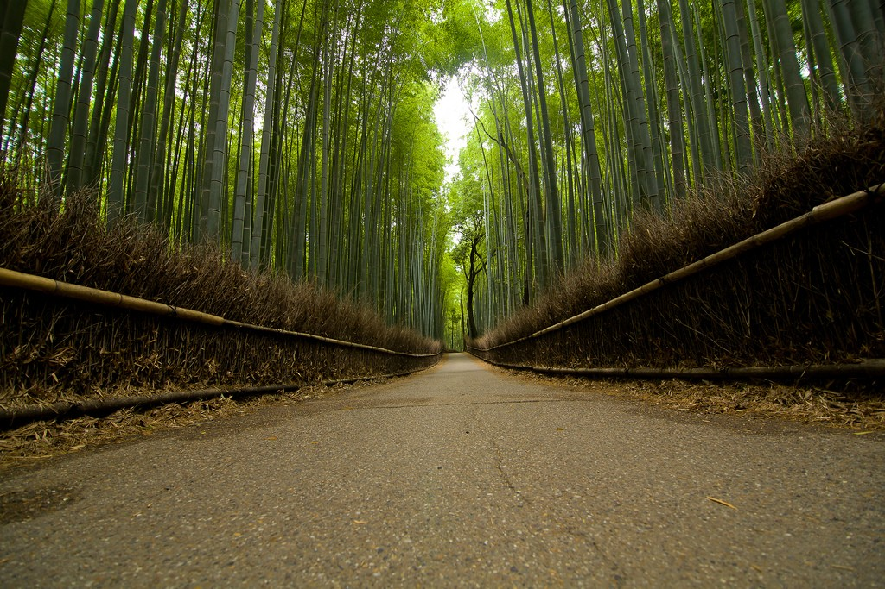Бамбуковый лес Сагано является заповедной зоной. Его история начинается с XIV века. По повелению монаха Мусо Сосэки был создан красивейший парк, с которого открывались красивые виды на горы и храмы Японии.
Сейчас бамбуковый лес занимает территорию в 16 квадратных километров. Там где почва совсем рыхлая от вылезших наружу корней деревьев, жители оборудовали навесные мостики. Очень здорово здесь в темное время суток. Как только стемнеет загораются фонарики, освещающие путь.
Тогда длинные тропинки за счет высоченных деревьев и теней от фонарей кажутся еще длиннее. В лавках, расположенных у главного входа в лес, можно приобрести сувениры ручной работы, изготовленные из этого вечнозеленого растения, в том числе корзины, чашки, посуду и коробки.
Фестиваль бамбуковых светильников в городе Такета
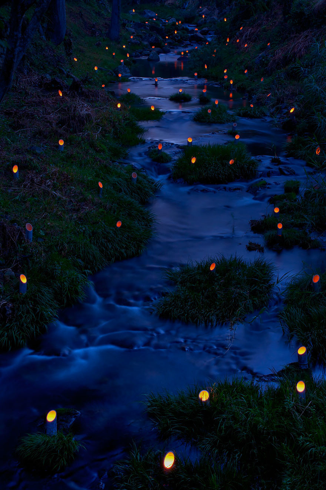Город Такэта находится в горах и окружен бамбуковыми лесами. В статусе города он довольно недавно, с 1954 года. Но населенный пункт (деревня) Такэта имеет довольно древнюю историю. Основной доход городу приносили бамбуковые леса. Но со временем спрос на бамбук упал. Тогда для усиления притока туристов в город и придумали Фестиваль бамбуковых светильников. Это произошло в 2000 году. Умельцы создают резные светильники для этого фестиваля. Всего количество светильников, задействованных в этом световом празднике, было 20000 штук.
Подготовка к фестивалю начинается заранее. Сначала вырубают в августе бамбук для светильников, затем жители города до ноября вырезают светильники. В подготовительных мероприятиях участвуют даже школьники. Некоторые из светильников так искусно вырезаны, что их можно назвать произведениями искусства.Фестиваль стал популярным ежегодным событием.
Длится он три дня в ноябре, с пятницы по воскресенье. Сейчас уже трудно представить Такэта без этого красочного фестиваля. Тысячи бамбуковых фонариков разбросаны по старым улочкам и каменным лестницам из Такэта в Оита Кен.
Использованы материалы с сайта: Wikiway